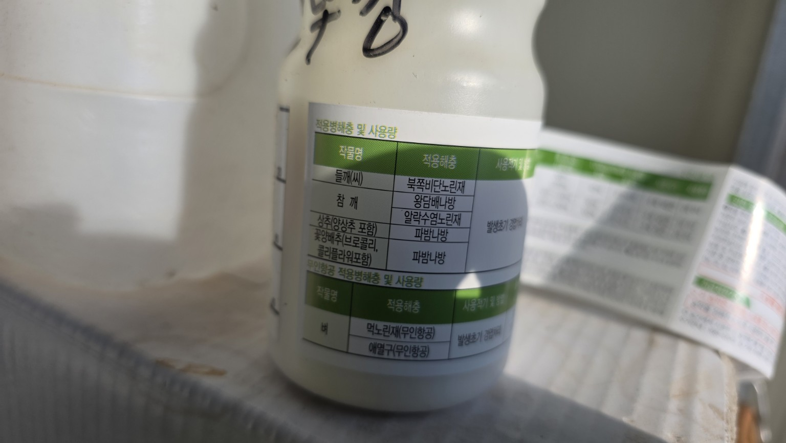
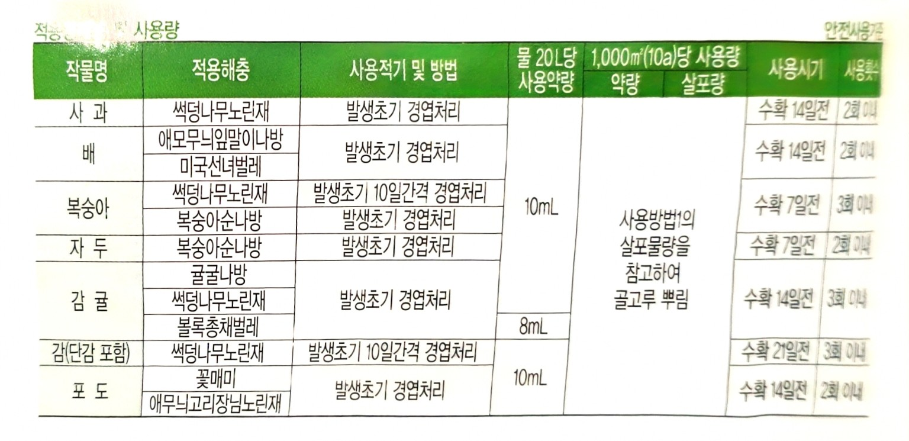
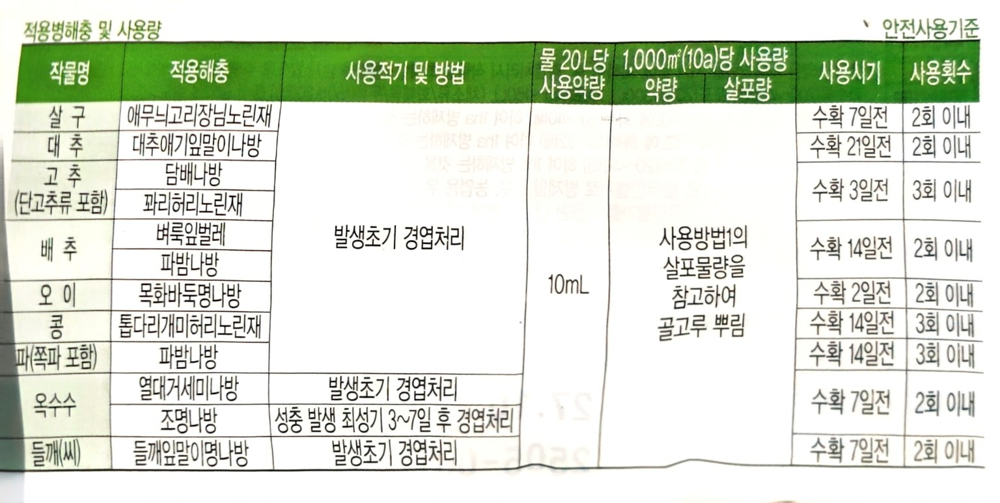
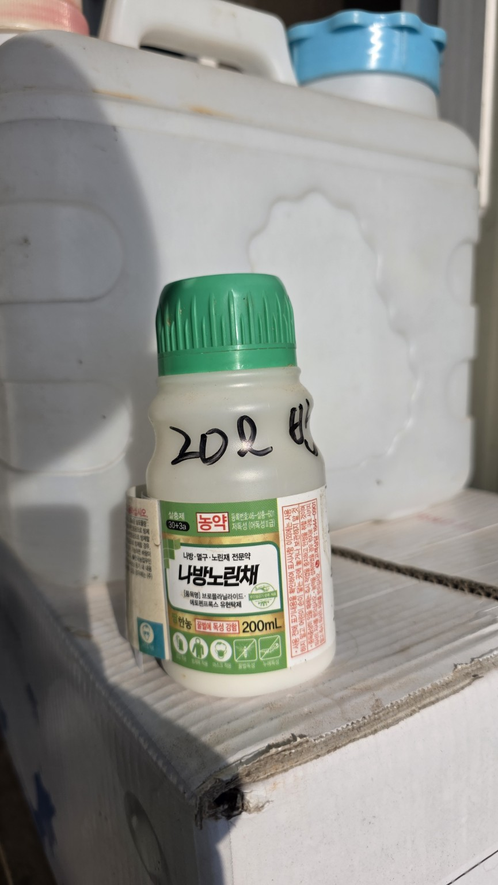

2026-08-13 농막 아랫밭 방제
들깨밭에 오전 7시부터 나방노린채 액상수화제를 살포한 작업 기록입니다.
살포 기록
| 시간 | 오전 7시 |
|---|---|
| 장소 | 화곡농장 농막 아랫밭 |
| 작물 | 들깨 |
| 희석 | 20L당 약제 10mL |
| 총량 | 40L · 약제 20mL |
현장 사진





들깨밭에 오전 7시부터 나방노린채 액상수화제를 살포한 작업 기록입니다.
| 시간 | 오전 7시 |
|---|---|
| 장소 | 화곡농장 농막 아랫밭 |
| 작물 | 들깨 |
| 희석 | 20L당 약제 10mL |
| 총량 | 40L · 약제 20mL |



